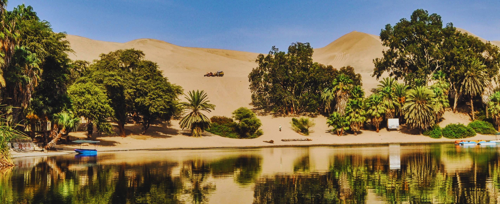
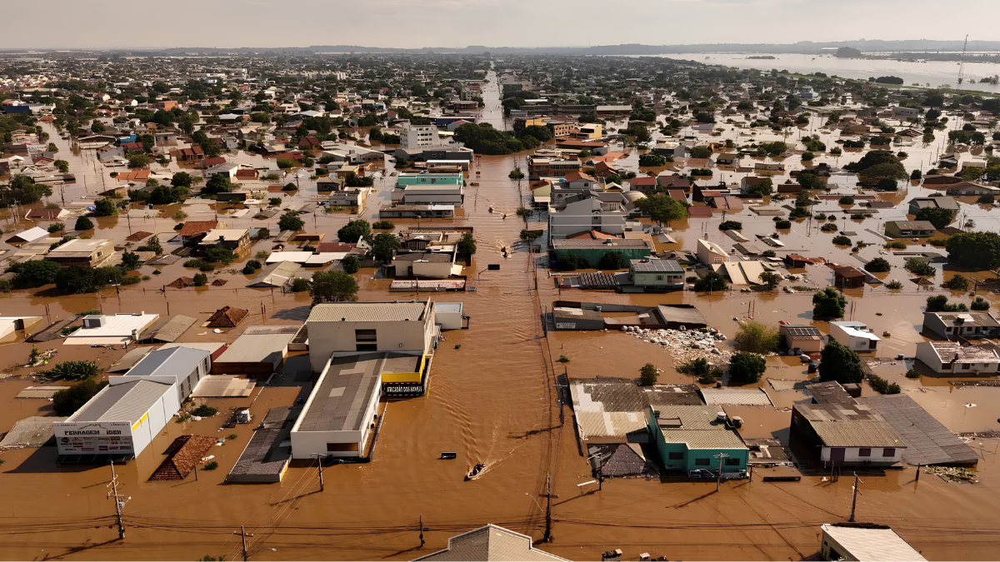
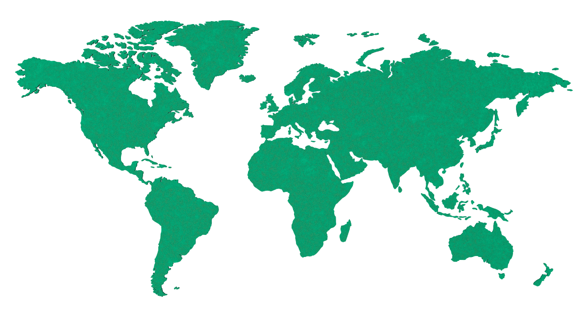
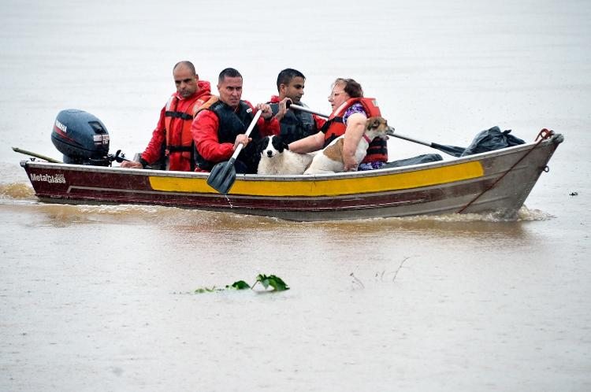

Desastres e falhas de comunicação expõem a maior falha atual: a demora crítica no salvamento de vidas em emergências.

O Oasis resolve a demora no socorro e a falta de comunicação em emergências, conectando vítimas a resgatadores em segundos.
A pulseira IoT usa satélite para transmitir localização precisa em emergências, funcionando onde nenhuma rede alcança.
Nossa plataforma em Python registra ocorrências, coordena doações e aciona resgate com rapidez e eficiência.
Localizar
Localizar vítimas em áreas sem sinal, reduzir o tempo de resposta e garantir que o socorro chegue a tempo.
Conectar
Conectar vítimas a socorro, autoridades e doações, garantindo que a ajuda certa chegue no momento certo.
Viajantes, moradores de áreas de risco e vítimas de desastres que precisam de socorro em locais isolados.


23 pessoas nunca foram encontradas. Sem localização, as buscas foram encerradas dois anos depois.
Viajante brasileira perdida no vulcão Rinjani, Indonésia. Sem sinal, o socorro chegou tarde demais.
Pessoas que enfrentam emergências sem cobertura celular, onde a comunicação falha e o tempo é crucial.
Tecnologia pensada para cada segundo importar.